| Seleccione la opción sobre la que necesita ayuda |
| Vincular |
| Reenviar |
| Historial |
| Duplicar |
| Generar Solicitud |
| Responder |
| Guía |
| Seguimiento de la guía |
| Adjuntar digitalización |
| Sticker |
| Anular |
| Radicar |
| Editar |
 Para que los cambios sean realizados en el archivo usted deberá hacer clic en el icono Cerrar al finalizar los procedimientos en la ventana Detalle de Comunicación.
Para que los cambios sean realizados en el archivo usted deberá hacer clic en el icono Cerrar al finalizar los procedimientos en la ventana Detalle de Comunicación.

| Comunicaciones Detalle de Comunicaciones |
Detalle de Comunicación le guiará paso a paso en la ejecución de las diferentes opciones que aparecen en el detalle de la Comunicación de cada uno de los Módulos de Comunicaciones.
 Para vincular una comunicación a un archivo determinado realice los siguientes pasos:
Para vincular una comunicación a un archivo determinado realice los siguientes pasos:
- Haga clic en el icono Vincular.
- Haga clic en el icono de la unidad documental a la que va a tranferir la comunicación.
- Haga clic en el icono Unidad Documental y realice la búsqueda del cliente o archivo Central o Histórico al que desea vincular la comunicación.
- Seleccione el tipo documental.
- Haga clic en guardar para realizar la vinculación y cerrar.
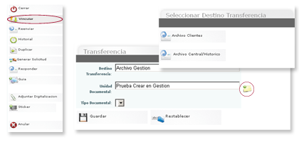
 Para reenviar una comunicación a otro usuario del sistema realice los siguientes pasos:
Para reenviar una comunicación a otro usuario del sistema realice los siguientes pasos:
- Haga clic en el icono Reenviar.
- Seleccione el tipo.
- Seleccione el destinatario y Copia a haciendo clic en la lupa.
- Escriba el asunto del comunicado.
- Escriba las observaciones de reenvío.
- Anexe los documentos que desea enviar.
- Escriba el número de folios.
- Haga una descripción de los documentos anexos.
- Para seleccionar firma haga clic en la lupa.
- Haga clic en guardar para reenviar o deshacer para borrar el formulario.
- Haga clic en la lupa para seleccionar otros destinatarios a los que desee reenviar la comunicación.
- Haga clic en guardar destino.
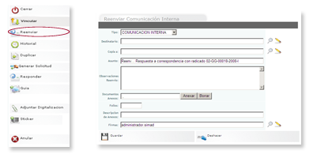
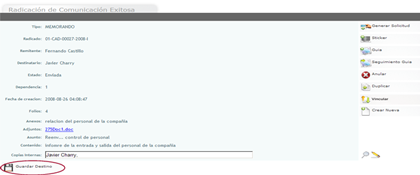
 - Una vez guardado el borrador puede realizar cualquier modificación al formato.
- Una vez guardado el borrador puede realizar cualquier modificación al formato.
 Muestra el listado de comunicaciones que guardan una relación de reenvió o respuesta de las comunicaciones internas.
Muestra el listado de comunicaciones que guardan una relación de reenvió o respuesta de las comunicaciones internas.
Para visualizar el historial de las comunicaciones internas realice los siguientes pasos:
- Haga clic en el icono Historial.
- Seleccione cualquiera de las opciones.
 Opciones lista de Historial
Opciones lista de Historial
- Guardar marca: Marque la correspondencia que desea guardar, haga clic en guardar para luego ser consultada.
- Marcar todos: Haga clic en marcar para guardar, borrar, entregar o exportar la correspondencia.
- Desmarcar todos: Haga clic en desmarcar para quitar las marcas de la correspondencia que el usuario guardo anteriormente.
- Borrar: Marque la correspondencia que desea borrar, haga clic en borrar para la correspondencia que desea quitar de la bandeja.
- Restaurar: Haga clic en restaurar para traer nuevamente las comunicaciones borradas.
- Exportar: Marque la correspondencia que desea exportar, haga clic en exportar para enviar los registros a un archivo de Excel para ser impresos.
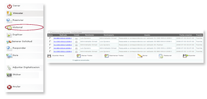
 Crear una nueva comunicación interna, basándose en una comunicación ya creada y realizando solo los cambios que sean necesarios.
Crear una nueva comunicación interna, basándose en una comunicación ya creada y realizando solo los cambios que sean necesarios.
Para duplicar comunicaciones internas realice los siguientes pasos:
- Haga clic en el icono Duplicar.
- Haga clic en las casillas en las cuales usted desea realizar cambios.
- Haga clic en guardar para dejar un borrador de la comunicación o restablecer para borrar los cambios.
- Seleccione radicar para generar el consecutivo de la nueva comunicación interna y el envió.
- Si va a enviar a otros destinatarios la misma comunicación haga clic en la lupa.
- Haga clic en guardar destino para finalizar el envió de la comunicación interna.
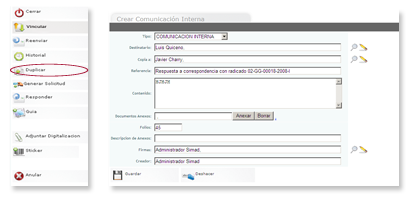
 Crea una solicitud de servicio, a partir de una comunicación interna.
Crea una solicitud de servicio, a partir de una comunicación interna.
Para generar una solicitud realice los siguientes pasos:
- Haga clic en el icono Generar Solicitud.
- Diligencie los campos en el formulario.
- Clic en guardar solicitud.
En el listado de solicitudes realice los siguientes pasos:
- Haga clic en imprimir marcados para generar la solicitud de servicio CAD e imprimir.
- O haga clic en exportar para generar un reporte de servicios en un archivo Excel.
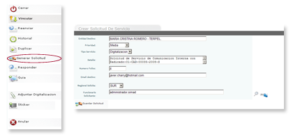
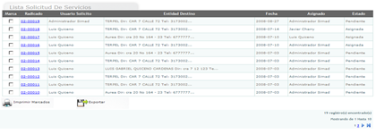
 Dar respuesta a las comunicaciones internas que llegan a la bandeja de entrada .
Dar respuesta a las comunicaciones internas que llegan a la bandeja de entrada .
Para responder comunicaciones internas realice los siguientes pasos:
- Haga clic en el icono Responder.
- Seleccione el tipo de comunicación.
- Para seleccionar el destinatario haga clic en la lupa.
- Seleccione a quien desea enviar la copia, haga clic en la lupa.
- El asunto del comunicado aparecerá automáticamente.
- Escriba el contenido de la comunicación interna.
- Anexe los documentos que desea enviar adjuntos.
- Escriba el número de folios.
- Haga una descripción de los documentos anexos.
- Seleccionar firma de quien envía la comunicación.
- Haga clic en guardar para dejar un borrador de la comunicación interna.
A continuación:
- Seleccione radicar para generar el consecutivo de la nueva comunicación y el envió.
- Haga clic en guardar destino.
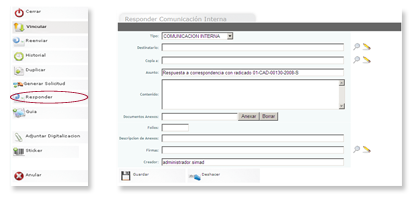
 Establecer una guía en la comunicación interna, la cual ha sido enviada por correo físico.
Establecer una guía en la comunicación interna, la cual ha sido enviada por correo físico.
Para establecer la guía de una comunicación interna realice los siguientes pasos:
- Haga clic en el icono Guía.
- Seleccione la empresa de mensajería por la cual fue enviada la correspondencia física.
- Digite el numero de la guía.
- Seleccione la fecha en que se envió la comunicación.
- Digite el valor del envió.
- Haga clic en guardar.
A continuación el sistema le mostrará el detalle de la comunicación interna con el icono de Seguimiento Guía.
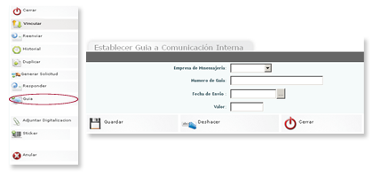
 Le permite hacer un seguimiento una vez creada la guía remitiéndolo a la página web del proveedor de servicio de mensajería y saber si su comunicación ha sido entregada al lugar de destino.
Le permite hacer un seguimiento una vez creada la guía remitiéndolo a la página web del proveedor de servicio de mensajería y saber si su comunicación ha sido entregada al lugar de destino.
Para hacer un seguimiento realice los siguientes pasos:
- Haga clic en el icono seguimiento de guía.
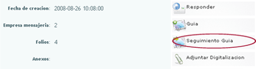
 Permite adjuntar una archivo que previamente ha sido digitalizado mediante un scanner.
Permite adjuntar una archivo que previamente ha sido digitalizado mediante un scanner.
Para adjuntar el archivo digitalizado correspondiente a la comunicación con la cual se esta trabajando realice los siguientes pasos:
- Haga clic en el icono Adjuntar Digitalización .
- Haga clic en examinar para buscar el archivo digitalizado
- Clic en adjuntar.
- Haga clic en cerrar para ver el detalle de la comunicación interna y el número de adjuntos.
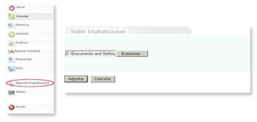
 Genera el número de stickers según el numero de destinatarios a los cuales les fue enviado la correspondencia interna.
Genera el número de stickers según el numero de destinatarios a los cuales les fue enviado la correspondencia interna.
Para generar un sticker realice los siguientes pasos:
- Haga clic en el icono Sticker.
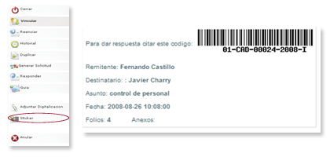
 - Simad genera el número de stickers de acuerdo a los destinatarios que se les envió la correspondencia interna, imprima los stickers y luego péguelos a la comunicación.
- Simad genera el número de stickers de acuerdo a los destinatarios que se les envió la correspondencia interna, imprima los stickers y luego péguelos a la comunicación.
 Elimina las comunicaciones que se creen que no son necesarias.
Elimina las comunicaciones que se creen que no son necesarias.
Para adjuntar anular una comunicación realice los siguientes pasos:
- Haga clic en el icono Anular.
- Seleccione la fecha en que se elimina la comunicación.
- Digite el motivo por el cual se hace la anulación.
- Haga clic en guardar para ver el detalle de la comunicación anulada o restaurar para borrar el formulario.
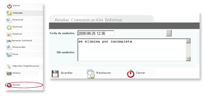
 Genera el consecutivo de la nueva comunicación y el envió.
Genera el consecutivo de la nueva comunicación y el envió.
Para radicar una comunicación realice los siguientes pasos:
- Haga clic en el icono Radicar .
- Si va a enviar a otros destinatarios la misma comunicación haga clic en la lupa.
- Haga clic en guardar destino para finalizar el envió de la comunicación interna.
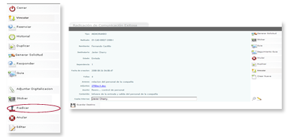
 Permite hacer cambios a una comunicación que ya esta creada y aún no se ha radicado.
Permite hacer cambios a una comunicación que ya esta creada y aún no se ha radicado.
Para editar una comunicación interna realice los siguientes pasos:
- Haga clic en el icono Editar.
- Haga clic donde desea realizar los cambios.
- Haga clic en guardar para dejar un borrador de la comunicación.
- Seleccione radicar para generar el consecutivo de la nueva comunicación y el envió.
- Si va a enviar a otros destinatarios la misma comunicación haga clic en la lupa.
- Haga clic en guardar destino para finalizar el envió de la comunicación.
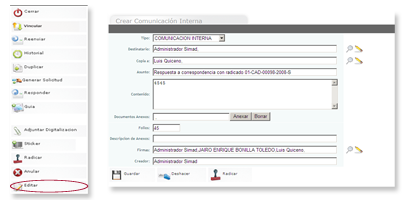